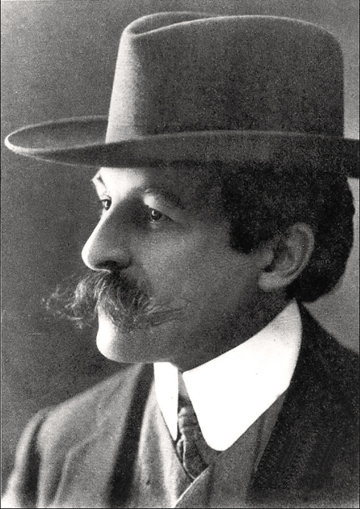

<!DOCTYPE html>
<html lang="it" class="scroll-smooth">
<head>
    <meta charset="UTF-8">
    <meta name="viewport" content="width=device-width, initial-scale=1.0">
    <title>Arsène Lupin — Il Ladro Gentiluomo | Édition Belle Époque</title>
    <!-- Favicon: cilindro e monocolo in oro su fondo bordeaux -->
    <link rel="icon" type="image/svg+xml" href="data:image/svg+xml,%3Csvg%20xmlns='http://www.w3.org/2000/svg'%20viewBox='0%200%2064%2064'%3E%3Crect%20x='2'%20y='2'%20width='60'%20height='60'%20rx='13'%20fill='%236b1f2a'%20stroke='%23c9a24b'%20stroke-width='3'/%3E%3Cpath%20d='M21%2038V15q0-3%203-3h16q3%200%203%203v23z'%20fill='%23c9a24b'/%3E%3Crect%20x='21'%20y='28'%20width='22'%20height='5'%20fill='%23120e0c'/%3E%3Crect%20x='11'%20y='37'%20width='42'%20height='6'%20rx='3'%20fill='%23e5c378'/%3E%3Ccircle%20cx='43'%20cy='50'%20r='5'%20fill='none'%20stroke='%23e5c378'%20stroke-width='2.2'/%3E%3C/svg%3E">
    <meta name="theme-color" content="#120e0c">
    <!-- Google Fonts: Playfair Display, Cormorant Garamond, Cinzel -->
    <link rel="preconnect" href="https://fonts.googleapis.com">
    <link rel="preconnect" href="https://fonts.gstatic.com" crossorigin>
    <link href="https://fonts.googleapis.com/css2?family=Cinzel:wght@500;700;900&family=Cormorant+Garamond:ital,wght@0,400;0,600;0,700;1,400;1,600&family=Playfair+Display:ital,wght@0,600;0,800;1,600&display=swap" rel="stylesheet">

    <script src="https://cdn.jsdelivr.net/npm/@tailwindcss/browser@4.1.7"></script>
    <script src="https://unpkg.com/@babel/standalone@7.26.10/babel.min.js"></script>
    <script type="importmap">
    {
        "imports": {
            "react": "https://esm.sh/react@18.3.1",
            "react/": "https://esm.sh/react@18.3.1/",
            "react-dom": "https://esm.sh/react-dom@18.3.1",
            "react-dom/": "https://esm.sh/react-dom@18.3.1/",
            "react-dom/client": "https://esm.sh/react-dom@18.3.1/client",
            "lucide-react": "https://esm.sh/lucide-react@0.474.0?external=react"
        }
    }
    </script>
    <style>
        :root {
            --bg-dark: #120e0c;
            --bg-card: #1c1613;
            --wine: #6b1f2a;
            --wine-light: #8b2635;
            --gold: #c9a24b;
            --gold-light: #e5c378;
            --cream: #f4ecd8;
            --cream-muted: #d8ceb8;
        }
        body {
            font-family: 'Cormorant Garamond', Georgia, serif;
            background-color: var(--bg-dark);
            color: var(--cream);
            background-image:
                radial-gradient(ellipse at top, rgba(107, 31, 42, 0.22) 0%, transparent 60%),
                radial-gradient(ellipse at bottom, rgba(201, 162, 75, 0.08) 0%, transparent 70%),
                linear-gradient(to bottom, #120e0c, #16120f, #120e0c);
            background-attachment: fixed;
        }
        .font-cinzel { font-family: 'Cinzel', serif; }
        .font-playfair { font-family: 'Playfair Display', serif; }
        .font-garamond { font-family: 'Cormorant Garamond', serif; }

        /* Vintage borders & drop caps */
        .vintage-border {
            border: 1px solid rgba(201, 162, 75, 0.35);
            outline: 1px solid rgba(201, 162, 75, 0.15);
            outline-offset: 4px;
        }
        .vintage-border-glow:hover {
            border-color: rgba(229, 195, 120, 0.7);
            box-shadow: 0 10px 25px -5px rgba(201, 162, 75, 0.18), inset 0 0 15px rgba(107, 31, 42, 0.3);
        }
        .drop-cap::first-letter {
            font-family: 'Playfair Display', serif;
            float: left;
            font-size: 3.4rem;
            line-height: 0.8;
            padding-top: 4px;
            padding-right: 12px;
            padding-bottom: 2px;
            color: var(--gold);
            font-weight: 700;
            text-shadow: 1px 1px 2px rgba(0,0,0,0.8);
        }
        /* Custom subtle scrollbar */
        ::-webkit-scrollbar {
            width: 8px;
        }
        ::-webkit-scrollbar-track {
            background: #0f0d0b;
        }
        ::-webkit-scrollbar-thumb {
            background: #3a2c22;
            border-radius: 4px;
            border: 1px solid #c9a24b40;
        }
        ::-webkit-scrollbar-thumb:hover {
            background: #6b1f2a;
        }
    </style>
</head>
<body class="antialiased selection:bg-[#6b1f2a] selection:text-[#f4ecd8]">
    <div id="root"></div>

    <script type="text/babel" data-type="module" data-presets="react">
        import React, { useState, useMemo, useEffect } from 'react';
        import { createRoot } from 'react-dom/client';
        import {
            BookOpen,
            Film,
            Tv,
            Theater,
            Search,
            Menu,
            X,
            Sparkles,
            Feather,
            Compass,
            Image as ImageIcon,
            ChevronDown,
            Filter,
            Crown,
            ScrollText,
            Clock,
            Radio,
            Disc3,
            Palette
        } from 'lucide-react';

        // --- DATA CATALOGS ---

        const BOOKS = [
            { year: 1907, original: "Arsène Lupin, gentleman-cambrioleur", italian: "Arsenio Lupin, ladro gentiluomo", type: "Raccolta di 9 racconti", note: "La celebre opera d'esordio che raccoglie i primi racconti usciti su 'Je Sais Tout'.", stories: [["L'arresto di Arsenio Lupin","L'arrestation d'Arsène Lupin"],["Arsenio Lupin in prigione","Arsène Lupin en prison"],["L'evasione di Arsenio Lupin","L'évasion d'Arsène Lupin"],["Il misterioso viaggiatore","Le mystérieux voyageur"],["La collana della regina","Le collier de la reine"],["Il Sette di Cuori","Le Sept de Cœur"],["La cassaforte di madame Imbert","Le coffre-fort de madame Imbert"],["La perla nera","La perle noire"],["Herlock Sholmes arriva troppo tardi","Herlock Sholmès arrive trop tard"]] },
            { year: 1908, original: "Arsène Lupin contre Herlock Sholmès", italian: "Arsenio Lupin contro Herlock Sholmes", type: "Raccolta / Romanzo", note: "Il leggendario scontro con la celebre parodia del detective britannico di Conan Doyle.", cta: "Vedi i due episodi", contentsTitle: "Un romanzo e un racconto", stories: [["La donna bionda","La dame blonde","Romanzo"],["La lampada ebraica","La lampe juive","Racconto"]] },
            { year: 1909, original: "L'Aiguille creuse", italian: "Il faraglione cavo", type: "Romanzo", note: "Noto anche come 'La guglia cava' o 'Il segreto della guglia'. Capolavoro indiscusso." },
            { year: 1910, original: "813", italian: "813", type: "Romanzo", note: "Riedito nel 1917 in due tomi: 'La doppia vita di Arsenio Lupin' e 'I tre delitti di Arsenio Lupin'.", cta: "Vedi i due volumi del 1917", contentsTitle: "Rieditato nel 1917 in due volumi", stories: [["La doppia vita di Arsenio Lupin","La double vie d'Arsène Lupin","Volume I"],["I tre delitti di Arsenio Lupin","Les trois crimes d'Arsène Lupin","Volume II"]] },
            { year: 1912, original: "Le bouchon de cristal", italian: "Il tappo di cristallo", type: "Romanzo", note: "Ispirato al noto scandalo di Panama; uno dei romanzi più drammatici della saga." },
            { year: 1912, original: "L'homme à la peau de bique", italian: "L'uomo con la pelle di capra", type: "Racconto", note: "Pubblicato inizialmente su rivista negli Stati Uniti prima dell'edizione francese." },
            { year: 1913, original: "Les confidences d'Arsène Lupin", italian: "Le confidenze di Arsenio Lupin", type: "Raccolta di 9 racconti", note: "Nove brillanti avventure retrospettive narrate dal ladro gentiluomo.", stories: [["Giochi di sole","Les jeux du soleil"],["L'anello nuziale","L'anneau nuptial"],["Il segno dell'ombra","Le signe de l'ombre"],["La trappola infernale","Le piège infernal"],["La sciarpa di seta rossa","L'écharpe de soie rouge"],["La morte in agguato","La mort qui rôde"],["Edith dal Collo di Cigno","Edith au Cou de Cygne"],["La festuca di paglia","Le fétu de paille"],["Il matrimonio di Arsenio Lupin","Le mariage d'Arsène Lupin"]] },
            { year: 1916, original: "L'Éclat d'obus", italian: "La scheggia d'obice", type: "Romanzo", note: "Ambientato durante la Prima guerra mondiale; apparizione cameo di Lupin." },
            { year: 1918, original: "Le Triangle d'or", italian: "Il triangolo d'oro", type: "Romanzo", note: "Un intrigo patriottico ed economico all'ombra della Grande Guerra." },
            { year: 1919, original: "L'Ile aux Trente Cercueils", italian: "L'Isola delle Trenta Bare", type: "Romanzo", note: "Toni gotici, leggende celtiche e misteri sulla remota isola bretone di Sarek." },
            { year: 1921, original: "Les Dents du Tigre", italian: "I denti della Tigre", type: "Romanzo", note: "Lupin torna sotto l'identità di Don Luis Perenna per risolvere un'eredità insanguinata." },
            { year: 1923, original: "Les huit coups de l'horloge", italian: "Gli otto rintocchi del pendolo", type: "Raccolta di 8 racconti", note: "Lupin, nei panni del principe Rénine, risolve otto enigmi con la giovane Hortense.", stories: [["In cima alla torre","Au sommet de la tour"],["La caraffa d'acqua","La carafe d'eau"],["Thérèse e Germaine","Thérèse et Germaine"],["Il film rivelatore","Le film révélateur"],["Il caso di Jean-Louis","Le cas de Jean-Louis"],["La signora con l'ascia","La dame à la hache"],["Passi sulla neve","Des pas sur la neige"],["Al dio Mercurio","Au dieu Mercure"]] },
            { year: 1924, original: "La comtesse de Cagliostro", italian: "La contessa di Cagliostro", type: "Romanzo", note: "La giovinezza di Lupin (Raoul d'Andrésy) e la sua prima grande nemica/amante." },
            { year: 1926, original: "Le pardessus d'Arsène Lupin", italian: "Il soprabito di Arsenio Lupin", type: "Racconto", note: "Breve racconto investigativo pubblicato sul periodico 'Le Journal'." },
            { year: 1927, original: "La demoiselle aux yeux verts", italian: "La signorina dagli occhi verdi", type: "Romanzo", note: "Un inseguimento amoroso e investigativo attraverso le province francesi." },
            { year: 1928, original: "L'agence Barnett et Cie", italian: "L'agenzia Barnett et Cie", type: "Raccolta di 8 racconti", note: "Lupin assume l'identità del detective privato Jim Barnett.", stories: [["Le gocce che cadono","Les gouttes qui tombent"],["La lettera d'amore di re George","La lettre d'amour du roi George"],["La partita di baccarà","La partie de baccara"],["L'uomo dai denti d'oro","L'homme aux dents d'or"],["Le dodici Africane di Béchoux","Les douze Africaines de Béchoux"],["Il caso fa miracoli","Le hasard fait des miracles"],["Guanti bianchi... gambali bianchi","Gants blancs... guêtres blanches"],["Béchoux arresta Jim Barnett","Béchoux arrête Jim Barnett"]] },
            { year: 1929, original: "Le pont qui s'effondre", italian: "Il ponte che crolla", type: "Racconto", note: "Pubblicato sulla rivista 'L'Émulation' di Rouen." },
            { year: 1929, original: "La demeure mystérieuse", italian: "La dimora misteriosa", type: "Romanzo", note: "Il furto dei diamanti di un'attrice e il rapimento all'Opera di Parigi." },
            { year: 1930, original: "Le cabochon d'émeraude", italian: "Lo smeraldo a cabochon", type: "Racconto", note: "Noto anche come 'L'anello di smeraldo', incentrato su un raffinato enigma matrimoniale." },
            { year: 1931, original: "La Barre-Y-Va", italian: "La Barre-Y-Va", type: "Romanzo", note: "Misteri e vecchie vendette in un maniero di campagna in Normandia." },
            { year: 1933, original: "La femme aux deux sourires", italian: "La donna dai due sorrisi", type: "Romanzo", note: "Un'avventura intricata che intreccia furti di quadri e identità segrete." },
            { year: 1933, original: "Victor, de la Brigade Mondaine", italian: "Victor, de la Brigade Mondaine", type: "Romanzo", note: "Lupin si infiltra nella polizia parigina come ispettore capo." },
            { year: 1935, original: "La Cagliostro se venge", italian: "La contessa di Cagliostro si vendica", type: "Romanzo", note: "Il ritorno dell'antica e spietata rivale di gioventù di Arsène." },
            { year: 1941, original: "Les milliards d'Arsène Lupin", italian: "I miliardi di Arsenio Lupin", type: "Romanzo postumo", note: "Pubblicato a puntate su 'L'Auto' prima della morte dell'autore e in volume postumo." },
            { year: 2012, original: "Le dernier amour d'Arsène Lupin", italian: "L'ultimo amore di Arsenio Lupin", type: "Romanzo postumo", note: "Manoscritto riscoperto scritto intorno al 1936 e pubblicato dagli eredi Leblanc." }
        ];

        const THEATER = [
            { year: 1908, original: "Arsène Lupin", italian: "Arsenio Lupin", notes: "Scritta in collaborazione con Francis De Croisset. Trionfo assoluto al Théâtre de l'Athénée di Parigi." },
            { year: 1911, original: "Une aventure d'Arsène Lupin", italian: "Un'avventura di Arsenio Lupin", notes: "Dramma teatrale in un atto scritto da Maurice Leblanc." },
            { year: 1920, original: "Le retour d'Arsène Lupin", italian: "Il ritorno di Arsenio Lupin", notes: "Scritta nuovamente a quattro mani con Francis De Croisset." },
            { year: 1930, original: "Cette femme est à moi", italian: "Questa donna è mia", notes: "Commedia scritta negli anni Trenta ma mai rappresentata in scena; pubblicata solo postuma nel 2015 dall'Association des Amis d’Arsène Lupin." },
            { year: 1932, original: "Un quart d'heure avec Arsène Lupin", italian: "Un quarto d'ora con Arsenio Lupin", notes: "Breve atto unico radiofonico/teatrale di Maurice Leblanc." }
        ];

        const CINEMA = [
            { year: 1908, original: "The Gentleman Burglar", italian: "The Gentleman Burglar", director: "Edwin S. Porter", imdb: "https://www.imdb.com/title/tt0366510/", notes: "Produzione statunitense, con William Ranous nel ruolo di Lupin." },
            { year: 1910, original: "Arsène Lupin contra Sherlock Holmes", italian: "Arsène Lupin contra Sherlock Holmes", director: "Viggo Larsen", imdb: "https://www.imdb.com/title/tt1163741/", notes: "Produzione tedesca in cinque episodi, con Paul Otto nel ruolo di Lupin." },
            { year: 1914, original: "Arsène Lupin", italian: "Arsenio Lupin", director: "Émile Chautard", imdb: "https://www.imdb.com/title/tt0461463/", notes: "Produzione francese, con Georges Tréville nel ruolo di Lupin." },
            { year: 1915, original: "The Gentleman Burglar", italian: "The Gentleman Burglar", director: "E. A. Martin", imdb: "https://www.imdb.com/title/tt1179851/", notes: "Produzione statunitense, con William Stowell nel ruolo di Lupin." },
            { year: 1919, img: "images/the_teeth_of_the_tiger_1919.jpg", original: "The Teeth of the Tiger", italian: "The Teeth of the Tiger", director: "Chester Withey", imdb: "https://www.imdb.com/title/tt0010761/", notes: "Pellicola muta statunitense tratta dall'omonimo romanzo." },
            { year: 1920, img: "images/813_1920.jpg", original: "813-Arsene Lupin", italian: "813-Arsene Lupin", director: "Scott F. Sidney", imdb: "https://www.imdb.com/title/tt0010942/", notes: "Produzione statunitense, con Wedgwood Nowell nel ruolo di Lupin." },
            { year: 1921, original: "Arsen Lupin utolso kalandja", italian: "Arsen Lupin utolso kalandja", director: "Paul Fejos", imdb: "https://www.imdb.com/title/tt0011931/", notes: "Produzione ungherese, con Gusztav Partos nel ruolo di Lupin." },
            { year: 1923, original: "813-Rupimono", italian: "813-Rupimono", director: "Kenji Mizoguchi", imdb: "https://www.imdb.com/title/tt0013812/", notes: "Produzione giapponese, con Minami Kômei nel ruolo di Lupin." },
            { year: 1928, img: "images/vom_taeter_fehlt_jede_spur_1928.jpg", original: "Vom Täter fehlt jede Spur", italian: "Vom Täter fehlt jede Spur", director: "Constantin J. David", imdb: "https://www.imdb.com/title/tt0438569/", notes: "Produzione tedesca, con Kurt Gerron nel ruolo di Lupin (nel film chiamato Arsène Dupin)." },
            { year: 1932, img: "images/arsenio_lupin_1932.jpg", original: "Arsène Lupin", italian: "Arsenio Lupin", director: "Jack Conway", imdb: "https://www.imdb.com/title/tt0022639/", notes: "Produzione MGM con John Barrymore e Lionel Barrymore." },
            { year: 1937, img: "images/arsene_lupin_detective_1937.jpg", original: "Arsène Lupin détective", italian: "Arsène Lupin détective", director: "Henri Diamant-Berger", imdb: "https://www.imdb.com/title/tt0143116/", notes: "Produzione francese, con Jules Berry nel ruolo di Lupin." },
            { year: 1938, img: "images/arsene_lupin_returns_1938.jpg", original: "Arsène Lupin Returns", italian: "Arsène Lupin Returns", director: "George Fitzmaurice", imdb: "https://www.imdb.com/title/tt0029884/", notes: "Produzione statunitense, con Melvyn Douglas nel ruolo di Lupin." },
            { year: 1944, img: "images/enter_arsene_lupin_1944.jpg", original: "Enter Arsene Lupin", italian: "Enter Arsene Lupin", director: "Ford L. Beebe", imdb: "https://www.imdb.com/title/tt0036794/", notes: "Produzione statunitense, con Melvyn Douglas nel ruolo di Lupin." },
            { year: 1947, img: "images/arsenio_lupin_1947.jpg", original: "Arsenio Lupin", italian: "Arsenio Lupin", director: "Ramon Peon", imdb: "https://www.imdb.com/title/tt0139860/", notes: "Produzione messicana, con Ramon Pereda nel ruolo di Lupin." },
            { year: 1947, img: "images/el_inspector_victor_contra_arsenio_lupin_1947.jpg", original: "El Inspector Victor contra Arsenio Lupin", italian: "El Inspector Victor contra Arsenio Lupin", director: "Ramon Peon", imdb: "https://www.imdb.com/title/tt0140286/", notes: "Produzione messicana, con Ramon Pereda nel ruolo di Lupin." },
            { year: 1957, img: "images/le_avventure_arsenio_lupin_1957.jpg", original: "Les Aventures d'Arsène Lupin", italian: "Le avventure di Arsenio Lupin", director: "Jacques Becker", imdb: "https://www.imdb.com/title/tt0050152/", notes: "Con Robert Lamoureux nel ruolo di Lupin." },
            { year: 1959, img: "images/il_ritorno_arsenio_lupin_1959.jpg", original: "Signé: Arsène Lupin", italian: "Il ritorno di Arsenio Lupin", director: "Yves Robert", imdb: "https://www.imdb.com/title/tt0052578/", notes: "Robert Lamoureux riprende il ruolo del celebre ladro." },
            { year: 1962, img: "images/arsenio_lupin_contro_arsenio_lupin_1962.jpg", original: "Arsène Lupin contre Arsène Lupin", italian: "Arsenio Lupin contro Arsenio Lupin", director: "Édouard Molinaro", imdb: "https://www.imdb.com/title/tt0055759/", notes: "Commedia con Jean-Claude Brialy e Jean-Pierre Cassel." },
            { year: 1979, img: "images/lupin_III_il_castello_di_cagliostro_1979.jpg", original: "Rupan sansei: Kariosutoro no shiro", italian: "Lupin III – Il castello di Cagliostro", director: "Hayao Miyazaki", imdb: "https://www.imdb.com/title/tt0079833/", notes: "Film d'animazione dedicato a Lupin III, con la voce di Yasuo Yamada nel ruolo del protagonista." },
            { year: 2004, img: "images/arsenio_lupin_2004.jpg", original: "Arsène Lupin", italian: "Arsenio Lupin", director: "Jean-Paul Salomé", imdb: "https://www.imdb.com/title/tt0373690/", notes: "Produzione franco-italo-spagnola con Romain Duris, Kristin Scott Thomas ed Eva Green." },
        ];

        const TELEVISION = [
            { year: "1971–1974", img: "images/arsenio_lupin_1971.jpg", original: "Arsène Lupin", italian: "Arsenio Lupin", imdb: "https://www.imdb.com/title/tt0136713/", notes: "Serie franco-europea con Georges Descrières nel ruolo di Lupin." },
            { year: "1980", img: "images/arsene_lupin_joue_et_perd_1980.jpg", original: "Arsène Lupin joue et perd", italian: "Arsène Lupin joue et perd", imdb: "https://www.imdb.com/title/tt0198056/", notes: "Miniserie televisiva francese con Jean-Claude Brialy." },
            { year: "1989–1996", img: "images/il_ritorno_arsenio_lupin_1989.jpg", original: "Le Retour d'Arsène Lupin", italian: "Il ritorno di Arsenio Lupin", imdb: "https://www.imdb.com/title/tt0096689/", notes: "Serie televisiva con François Dunoyer nel ruolo del protagonista." },
            { year: "1996", img: "images/les_exploits_de_arsene_lupin_1996.jpg", original: "Les exploits d'Arsène Lupin", italian: "Les exploits d'Arsène Lupin", imdb: "https://www.imdb.com/it/title/tt0115293/", notes: "Serie animata franco-canadese prodotta da Cinar e France-Animation (26 episodi)." },
            { year: "2021–oggi", img: "images/lupin_2021.jpg", original: "Lupin", italian: "Lupin", imdb: "https://www.imdb.com/it/title/tt2531336/", notes: "Serie Netflix con Omar Sy nel ruolo di Assane Diop." }
        ];

        const RADIO = [
            { years: "marzo 1960 – luglio 1961", title: "Arsène Lupin", broadcaster: "France Inter", creator: "Abder Isker", adaptation: "Jean Marcillac", voice: "Michel Roux" }
        ];

        const DISCOGRAPHY = [
            { title: "La Demeure mystérieuse", text: "Testo ridotto", discs: "3 cd", label: "Livraphone", code: "LIV 7014", year: 2001 },
            { title: "L’Aiguille creuse", text: "Testo integrale", discs: "6 cd", label: "Livraphone", code: "LIV167C", year: 2004 },
            { title: "La demoiselle aux yeux verts", text: "Testo integrale", discs: "6 cd", label: "Livraphone", ean: "3358950000197", year: 2004 },
            { title: "La Barre y va", text: "Testo integrale", discs: "5 cd", label: "Livraphone", ean: "3358950000319", year: 2004 }
        ];

        const COMICS_INFO = { adapter: "André-Paul Duchâteau", publisher: "Claude Lefrancq Éditeur, Bruxelles" };

        const COMICS = [
            { n: 1, title: "Le bouchon de cristal", artist: "Jacques Géron", year: 1989 },
            { n: 2, title: "813: la double vie", artist: "Jacques Géron", year: 1990 },
            { n: 3, title: "813: les trois crimes", artist: "Jacques Géron", year: 1991 },
            { n: 4, title: "La demoiselle aux yeux verts", artist: "Jacques Géron", year: 1992 },
            { n: 5, title: "Victor de la Brigade Mondaine", artist: "Erwin Drèze", year: 1992 },
            { n: 6, title: "L’Aiguille creuse", artist: "Jacques Géron", year: 1994 }
        ];

        // --- ORNAMENTAL COMPONENTS ---

        function VintageDivider({ text, className = "" }) {
            return (
                <div className={`flex items-center justify-center my-8 ${className}`}>
                    <div className="h-px bg-gradient-to-r from-transparent via-[#c9a24b]/50 to-[#c9a24b] w-16 sm:w-28"></div>
                    <div className="mx-4 flex items-center space-x-2 text-[#c9a24b]">
                        <span className="text-xs">✦</span>
                        {text && (
                            <span className="font-cinzel text-xs uppercase tracking-[0.25em] text-[#e5c378] font-bold">
                                {text}
                            </span>
                        )}
                        <span className="text-sm font-serif">❦</span>
                        <span className="text-xs">✦</span>
                    </div>
                    <div className="h-px bg-gradient-to-r from-[#c9a24b] via-[#c9a24b]/50 to-transparent w-16 sm:w-28"></div>
                </div>
            );
        }

        function SectionHeading({ title, subtitle, ornament = "⚜" }) {
            return (
                <div className="text-center mb-12">
                    <div className="text-[#c9a24b] text-xl mb-1">{ornament}</div>
                    <h2 className="font-playfair text-3xl sm:text-4xl md:text-5xl font-bold tracking-tight text-[#f4ecd8] drop-shadow-md">
                        {title}
                    </h2>
                    {subtitle && (
                        <p className="font-garamond italic text-lg sm:text-xl text-[#c9a24b] mt-2 max-w-2xl mx-auto">
                            {subtitle}
                        </p>
                    )}
                    <VintageDivider />
                </div>
            );
        }

        // --- MAIN APP COMPONENT ---

        function App() {
            const [mobileMenuOpen, setMobileMenuOpen] = useState(false);
            const [bookSearch, setBookSearch] = useState('');
            const [selectedBookType, setSelectedBookType] = useState('ALL');
            const [openBook, setOpenBook] = useState(null);
            const [zoomImg, setZoomImg] = useState(null);

            useEffect(() => {
                if (!openBook) return;
                const onKey = (e) => { if (e.key === 'Escape') setOpenBook(null); };
                window.addEventListener('keydown', onKey);
                const prev = document.body.style.overflow;
                document.body.style.overflow = 'hidden';
                return () => {
                    window.removeEventListener('keydown', onKey);
                    document.body.style.overflow = prev;
                };
            }, [openBook]);

            useEffect(() => {
                if (!zoomImg) return;
                const onKey = (e) => { if (e.key === 'Escape') setZoomImg(null); };
                window.addEventListener('keydown', onKey);
                const prev = document.body.style.overflow;
                document.body.style.overflow = 'hidden';
                return () => {
                    window.removeEventListener('keydown', onKey);
                    document.body.style.overflow = prev;
                };
            }, [zoomImg]);

            // Scroll helper
            const scrollToSection = (id) => {
                setMobileMenuOpen(false);
                const element = document.getElementById(id);
                if (element) {
                    const offset = 80;
                    const bodyRect = document.body.getBoundingClientRect().top;
                    const elementRect = element.getBoundingClientRect().top;
                    const elementPosition = elementRect - bodyRect;
                    const offsetPosition = elementPosition - offset;

                    window.scrollTo({
                        top: offsetPosition,
                        behavior: 'smooth'
                    });
                }
            };

            // Filter books
            const filteredBooks = useMemo(() => {
                return BOOKS.filter(book => {
                    const matchesSearch =
                        book.italian.toLowerCase().includes(bookSearch.toLowerCase()) ||
                        book.original.toLowerCase().includes(bookSearch.toLowerCase()) ||
                        book.year.toString().includes(bookSearch);

                    if (!matchesSearch) return false;
                    if (selectedBookType === 'ALL') return true;
                    if (selectedBookType === 'ROMANZO') return book.type.includes('Romanzo');
                    if (selectedBookType === 'RACCOLTA') return book.type.includes('Raccolta');
                    if (selectedBookType === 'RACCONTO') return book.type.includes('Racconto');
                    return true;
                });
            }, [bookSearch, selectedBookType]);

            const navLinks = [
                { name: "Home", id: "hero" },
                { name: "Chi è Lupin", id: "biografia" },
                { name: "I Libri", id: "libri" },
                { name: "Teatro", id: "teatro" },
                { name: "Cinema & TV", id: "film-tv" },
                { name: "Radio", id: "radio" },
                { name: "Dischi", id: "discografia" },
                { name: "Fumetti", id: "fumetti" },
            ];

            return (
                <div className="min-h-screen flex flex-col relative overflow-x-hidden">
                    {/* Top Aesthetic Border Accent */}
                    <div className="h-1 bg-gradient-to-r from-[#6b1f2a] via-[#c9a24b] to-[#6b1f2a] sticky top-0 z-50"></div>

                    {/* STICKY HEADER */}
                    <header className="sticky top-1 z-40 bg-[#120e0ce6] backdrop-blur-md border-b border-[#c9a24b]/30 shadow-lg">
                        <div className="max-w-7xl mx-auto px-4 sm:px-6 lg:px-8 h-20 flex items-center justify-between">
                            {/* Brand / Logo */}
                            <a
                                href="#hero"
                                onClick={(e) => { e.preventDefault(); scrollToSection('hero'); }}
                                className="group flex items-center space-x-3 cursor-pointer"
                            >
                                <div className="w-10 h-10 rounded-full border border-[#c9a24b] flex items-center justify-center bg-[#6b1f2a]/40 group-hover:border-[#e5c378] transition-colors">
                                    <svg viewBox="0 0 64 64" className="w-6 h-6" role="img" aria-label="Cilindro e monocolo">
                                        <path d="M21 38V15q0-3 3-3h16q3 0 3 3v23z" fill="#c9a24b" />
                                        <rect x="21" y="28" width="22" height="5" fill="#120e0c" />
                                        <rect x="11" y="37" width="42" height="6" rx="3" fill="#e5c378" />
                                        <circle cx="43" cy="50" r="5" fill="none" stroke="#e5c378" strokeWidth="2.2" />
                                    </svg>
                                </div>
                                <div>
                                    <span className="font-cinzel text-xl sm:text-2xl font-bold tracking-widest text-[#f4ecd8] block leading-none">
                                        ARSÈNE LUPIN
                                    </span>
                                    <span className="font-garamond italic text-xs tracking-widest text-[#c9a24b] block mt-1">
                                        Gentleman-Cambrioleur • 1905
                                    </span>
                                </div>
                            </a>

                            {/* Desktop Nav */}
                            <nav className="hidden md:flex items-center space-x-1 lg:space-x-3">
                                {navLinks.map(link => (
                                    <button
                                        key={link.id}
                                        onClick={() => scrollToSection(link.id)}
                                        className="font-cinzel text-xs lg:text-sm tracking-wider uppercase px-3 py-2 text-[#d8ceb8] hover:text-[#e5c378] transition-colors hover:bg-[#6b1f2a]/20 rounded border border-transparent hover:border-[#c9a24b]/30"
                                    >
                                        {link.name}
                                    </button>
                                ))}
                            </nav>

                            {/* Mobile Hamburger Button */}
                            <div className="md:hidden">
                                <button
                                    onClick={() => setMobileMenuOpen(!mobileMenuOpen)}
                                    className="p-2 rounded border border-[#c9a24b]/40 text-[#c9a24b] hover:text-[#f4ecd8] hover:bg-[#6b1f2a]/30 focus:outline-none"
                                    aria-label="Apri menu"
                                >
                                    {mobileMenuOpen ? <X className="w-6 h-6" /> : <Menu className="w-6 h-6" />}
                                </button>
                            </div>
                        </div>

                        {/* Mobile Dropdown Menu */}
                        {mobileMenuOpen && (
                            <div className="md:hidden bg-[#16120f] border-b border-[#c9a24b]/40 px-4 pt-2 pb-6 space-y-2">
                                {navLinks.map(link => (
                                    <button
                                        key={link.id}
                                        onClick={() => scrollToSection(link.id)}
                                        className="block w-full text-left font-cinzel text-sm uppercase tracking-widest px-4 py-3 text-[#f4ecd8] hover:bg-[#6b1f2a]/40 border-l-2 border-transparent hover:border-[#c9a24b] transition-all"
                                    >
                                        {link.name}
                                    </button>
                                ))}
                            </div>
                        )}
                    </header>

                    {/* MAIN CONTENT */}
                    <main className="flex-grow">

                        {/* 1. HERO SECTION */}
                        <section id="hero" className="relative min-h-[90vh] flex items-center justify-center px-4 py-20 text-center">
                            {/* Decorative framing box */}
                            <div className="max-w-4xl mx-auto p-8 sm:p-14 relative z-10 bg-[#16120f]/90 border-2 border-[#c9a24b]/40 shadow-2xl rounded-sm">
                                {/* Corner flourishes */}
                                <div className="absolute -top-3 -left-3 text-[#c9a24b] text-xl font-serif select-none">╔</div>
                                <div className="absolute -top-3 -right-3 text-[#c9a24b] text-xl font-serif select-none">╗</div>
                                <div className="absolute -bottom-3 -left-3 text-[#c9a24b] text-xl font-serif select-none">╚</div>
                                <div className="absolute -bottom-3 -right-3 text-[#c9a24b] text-xl font-serif select-none">╝</div>

                                <div className="inline-block px-4 py-1 border-y border-[#c9a24b]/60 mb-6">
                                    <span className="font-cinzel text-xs sm:text-sm tracking-[0.3em] uppercase text-[#c9a24b]">
                                        Édition Belle Époque • Année 1905
                                    </span>
                                </div>

                                <h1 className="font-playfair text-4xl sm:text-6xl md:text-7xl font-extrabold text-[#f4ecd8] tracking-tight mb-4 leading-none">
                                    Arsène Lupin
                                </h1>

                                <p className="font-cinzel text-lg sm:text-2xl text-[#e5c378] tracking-widest uppercase mb-6 font-semibold">
                                    Il Ladro Gentiluomo
                                </p>

                                <div className="w-24 h-px bg-[#c9a24b] mx-auto mb-6"></div>

                                <p className="font-garamond text-xl sm:text-2xl text-[#d8ceb8] max-w-2xl mx-auto leading-relaxed mb-8 italic">
                                    Nato dalla penna raffinata di <span className="text-[#f4ecd8] font-semibold not-italic">Maurice Leblanc</span> nel 1905 sulle pagine della celebre rivista parigina <em className="text-[#e5c378]">«Je Sais Tout»</em>.
                                    Maestro del travestimento, paladino dell'ingegno, ironico e inafferrabile custode dei più reconditi segreti di Francia.
                                </p>

                                {/* Action Buttons */}
                                <div className="flex flex-wrap items-center justify-center gap-4 pt-2">
                                    <button
                                        onClick={() => scrollToSection('libri')}
                                        className="font-cinzel text-xs sm:text-sm tracking-widest uppercase px-6 py-3.5 bg-[#6b1f2a] hover:bg-[#8b2635] text-[#f4ecd8] border border-[#c9a24b] transition-all duration-300 shadow-md hover:scale-105 flex items-center space-x-2 cursor-pointer"
                                    >
                                        <BookOpen className="w-4 h-4 text-[#c9a24b]" />
                                        <span>I Romanzi e i Racconti</span>
                                    </button>
                                    <button
                                        onClick={() => scrollToSection('biografia')}
                                        className="font-cinzel text-xs sm:text-sm tracking-widest uppercase px-6 py-3.5 bg-transparent hover:bg-[#c9a24b]/10 text-[#f4ecd8] border border-[#c9a24b]/60 hover:border-[#c9a24b] transition-all duration-300 flex items-center space-x-2 cursor-pointer"
                                    >
                                        <Feather className="w-4 h-4 text-[#c9a24b]" />
                                        <span>Chi è Lupin</span>
                                    </button>
                                </div>
                            </div>
                        </section>

                        {/* 2. CHI È LUPIN (BIOGRAFIA & GENESI) */}
                        <section id="biografia" className="py-20 px-4 sm:px-6 lg:px-8 max-w-6xl mx-auto">
                            <SectionHeading
                                title="Genesi & Mito del Ladro Gentiluomo"
                                subtitle="Dalla Parigi di inizio Novecento all'immaginario collettivo universale"
                                ornament="⚜"
                            />

                            <div className="grid grid-cols-1 md:grid-cols-12 gap-8 items-stretch">
                                {/* Left main text column */}
                                <div className="md:col-span-7 bg-[#1c1613] p-8 sm:p-10 border border-[#c9a24b]/30 relative rounded-sm">
                                    <div className="absolute top-3 right-3 text-[#c9a24b]/30 font-cinzel text-xs">I. LA CREAZIONE</div>
                                    <h3 className="font-playfair text-2xl sm:text-3xl font-bold text-[#e5c378] mb-6">
                                        Maurice Leblanc e la nascita del mito
                                    </h3>

                                    <p className="drop-cap font-garamond text-xl sm:text-2xl text-[#d8ceb8] leading-relaxed mb-6">
                                        Maurice Leblanc (1864–1941), raffinato scrittore e giornalista normanno, creò Arsène Lupin su commissione dell'editore Pierre Lafitte, che cercava un eroe francese capace di rivaleggiare con il celebre Sherlock Holmes di Arthur Conan Doyle. Secondo un'ipotesi ricorrente fra gli studiosi — ma sempre negata dallo stesso Leblanc — la figura di Lupin potrebbe essere stata suggestionata anche dall'anarchico francese Alexandre Marius Jacob, celebre per la sua audacia e per il codice morale che gli impediva, a suo dire, di rubare a medici, artisti o lavoratori.
                                    </p>

                                    <p className="font-garamond text-lg sm:text-xl text-[#d8ceb8] leading-relaxed mb-6">
                                        Lupin non è un criminale comune: è un <strong className="text-[#f4ecd8]">gentiluomo cosmopolita</strong>, spadaccino, cultore d'arte e prestigiatore sociale. Ruba soltanto ai ceti aristocratici e ai magnati disonesti, lasciando sovente un beffardo biglietto da visita prima di compiere l'impresa.
                                    </p>

                                    <div className="border-l-2 border-[#c9a24b] pl-4 py-1 italic font-garamond text-lg text-[#e5c378]">
                                        «Arsène Lupin non ha rivali né padroni: si diverte a farsi beffe della serietà del mondo borghese con un sorriso e un inchino perfetto.»
                                    </div>
                                </div>

                                {/* Right complementary column */}
                                <div className="md:col-span-5 flex flex-col justify-between space-y-6">
                                    {/* Box 1: Gli Avversari */}
                                    <div className="bg-[#181310] p-6 border border-[#c9a24b]/30 rounded-sm">
                                        <div className="flex items-center space-x-3 mb-3 text-[#c9a24b]">
                                            <Compass className="w-5 h-5" />
                                            <h4 className="font-cinzel text-sm uppercase tracking-widest font-bold text-[#e5c378]">
                                                I Grandi Rivali
                                            </h4>
                                        </div>
                                        <p className="font-garamond text-base sm:text-lg text-[#d8ceb8] leading-normal">
                                            Le sue avventure vedono l'instancabile inseguimento dell'ostinato <strong className="text-[#f4ecd8]">Ispettore Ganimard</strong> della Sûreté di Parigi, e lo scontro intellettuale con <strong className="text-[#f4ecd8]">Herlock Sholmès</strong>, sagace parodia dell'investigatore di Baker Street creata da Leblanc per satireggiare il rigido razionalismo britannico.
                                        </p>
                                    </div>

                                    {/* Box 2: Eredità Culturale */}
                                    <div className="bg-[#181310] p-6 border border-[#c9a24b]/30 rounded-sm">
                                        <div className="flex items-center space-x-3 mb-3 text-[#c9a24b]">
                                            <Sparkles className="w-5 h-5" />
                                            <h4 className="font-cinzel text-sm uppercase tracking-widest font-bold text-[#e5c378]">
                                                L'Eredità Moderna
                                            </h4>
                                        </div>
                                        <p className="font-garamond text-base sm:text-lg text-[#d8ceb8] leading-normal mb-3">
                                            Il carisma di Lupin ha generato una vasta discendenza: dal celeberrimo nipote <strong className="text-[#f4ecd8]">Lupin III</strong> ideato dal mangaka Monkey Punch, all'inafferrabile ladro <strong className="text-[#f4ecd8]">Kaito Kid</strong> di Gosho Aoyama.
                                        </p>
                                        <p className="font-garamond text-base sm:text-lg text-[#d8ceb8] leading-normal">
                                            Viene citato da Umberto Eco ne <em>Il pendolo di Foucault</em> ed è la figura tutelare del videogioco cult <em>Persona 5</em>.
                                        </p>
                                    </div>
                                </div>
                            </div>

                            {/* Blocco Biografico Autore: Maurice Leblanc */}
                            <div className="mt-12 bg-[#1c1613] p-8 sm:p-10 border border-[#c9a24b]/30 relative rounded-sm">
                                <div className="absolute top-3 right-3 text-[#c9a24b]/30 font-cinzel text-xs">II. L'AUTORE</div>

                                <h3 className="font-playfair text-2xl sm:text-3xl font-bold text-[#e5c378] mb-6">
                                    Maurice Leblanc: vita dell'autore
                                </h3>

                                <div className="grid grid-cols-1 md:grid-cols-3 gap-8 items-center">
                                    {/* Riquadro Ritratto / Simbolo */}
                                    <div className="md:col-span-1 flex flex-col items-center justify-center p-6 bg-[#16120f] border border-[#c9a24b]/30 rounded-sm text-center h-full">
                                        <figure className="w-full max-w-[260px] mb-5">
                                            <div className="p-1.5 border border-[#c9a24b]/60 bg-[#120e0c] shadow-lg shadow-black/40">
                                                 setZoomImg({ src: 'images/maurice_leblanc.jpg', alt: 'Ritratto di Maurice Leblanc, 1907', caption: 'Maurice Leblanc, 1907 — Foto di Henri Manuel' })}
                                                    title="Clicca per ingrandire"
                                                    className="w-full aspect-[3/4] object-cover object-top block cursor-zoom-in"
                                                    style={{ filter: 'sepia(0.15)' }}
                                                />
                                            </div>
                                            <figcaption className="mt-2 font-garamond text-xs leading-snug text-[#d8ceb8]">
                                                <span className="italic text-[#e5c378]">Maurice Leblanc, 1907</span><br />
                                                Foto di Henri Manuel<br />
                                                Licenza:{' '}
                                                <a
                                                    href="https://creativecommons.org/publicdomain/mark/1.0/"
                                                    target="_blank"
                                                    rel="noopener noreferrer"
                                                    className="text-[#e5c378] hover:text-[#f4ecd8] underline underline-offset-2"
                                                >
                                                    Di pubblico dominio (Public domain) ↗
                                                </a>
                                            </figcaption>
                                        </figure>
                                        <h4 className="font-cinzel text-base uppercase tracking-widest font-bold text-[#f4ecd8] mb-1">
                                            Maurice Leblanc
                                        </h4>
                                        <span className="font-cinzel text-sm text-[#c9a24b] tracking-wider mb-2">
                                            1864 – 1941
                                        </span>
                                        <div className="w-12 h-px bg-[#c9a24b]/40 my-2"></div>
                                        <p className="font-garamond italic text-sm text-[#d8ceb8]">
                                            Scrittore & Giornalista<br />
                                            Légion d'Honneur (1908)
                                        </p>
                                        <p className="font-garamond text-xs text-[#c9a24b] mt-3">
                                            Villa «Le Clos Lupin»<br />Étretat, Normandia
                                        </p>
                                    </div>

                                    {/* Testo Biografico */}
                                    <div className="md:col-span-2 space-y-4">
                                        <p className="drop-cap font-garamond text-xl sm:text-2xl text-[#d8ceb8] leading-relaxed">
                                            Maurice Marie Émile Leblanc nacque a Rouen, in Normandia, l'11 dicembre 1864, secondo figlio di una famiglia agiata e colta. Rifiutando la carriera che il padre aveva immaginato per lui in una fabbrica di carte da gioco, si trasferì a Parigi nel 1888 per dedicarsi alla scrittura, lavorando come giornalista e pubblicando romanzi di costume di ispirazione naturalista; da adolescente aveva peraltro frequentato, a Rouen, Gustave Flaubert e Guy de Maupassant.
                                        </p>
                                        <p className="font-garamond text-lg sm:text-xl text-[#d8ceb8] leading-relaxed">
                                            La sua vita cambiò per sempre nel 1905, quando l'editore Pierre Lafitte gli commissionò un racconto per la nuova rivista <em>«Je Sais Tout»</em>: nacque così Arsène Lupin, il ladro gentiluomo, personaggio che ebbe un successo immediato e clamoroso, tanto da spingere Leblanc a dedicargli quasi l'intera produzione successiva, con qualche insofferenza per essere rimasto identificato solo con quella creatura di carta.
                                        </p>
                                        <p className="font-garamond text-lg sm:text-xl text-[#d8ceb8] leading-relaxed">
                                            Leblanc trascorse lunghi periodi a Étretat, in Normandia, nella villa che chiamò <em>«Le Clos Lupin»</em> (oggi museo dedicato al personaggio), fonte di ispirazione per molte ambientazioni delle sue storie, tra cui <em>«L'Aiguille creuse»</em>. Fu nominato Cavaliere della Légion d'Honneur il 17 gennaio 1908, per i suoi servizi alla letteratura. Morì a Perpignan il 6 novembre 1941, all'età di 76 anni, lasciando un'eredità letteraria che avrebbe attraversato il secolo successivo attraverso innumerevoli adattamenti teatrali, cinematografici e televisivi.
                                        </p>
                                    </div>
                                </div>
                            </div>
                        </section>

                        {/* 3. LIBRI (CATALOGO COMPLETO) */}
                        <section id="libri" className="py-20 px-4 sm:px-6 lg:px-8 max-w-7xl mx-auto bg-[#16120f]/60 border-y border-[#c9a24b]/20">
                            <SectionHeading
                                title="I Romanzi & i Racconti"
                                subtitle="Il canone letterario ufficiale scritto da Maurice Leblanc (1907 – postumi)"
                                ornament="📖"
                            />

                            {/* Search and Filters Bar */}
                            <div className="max-w-3xl mx-auto mb-10 bg-[#1c1613] p-4 sm:p-6 border border-[#c9a24b]/30 rounded-sm shadow-xl">
                                <div className="flex flex-col sm:flex-row gap-4 items-center justify-between">
                                    {/* Search Input */}
                                    <div className="relative w-full sm:w-2/3">
                                        <Search className="w-5 h-5 absolute left-3 top-1/2 -translate-y-1/2 text-[#c9a24b]" />
                                        <input
                                            type="text"
                                            value={bookSearch}
                                            onChange={(e) => setBookSearch(e.target.value)}
                                            placeholder="Cerca per titolo italiano, francese o anno..."
                                            className="w-full pl-10 pr-4 py-2.5 bg-[#120e0c] border border-[#c9a24b]/40 rounded-sm font-garamond text-lg text-[#f4ecd8] placeholder-[#c9a24b]/40 focus:outline-none focus:border-[#e5c378]"
                                        />
                                        {bookSearch && (
                                            <button
                                                onClick={() => setBookSearch('')}
                                                className="absolute right-3 top-1/2 -translate-y-1/2 text-xs text-[#c9a24b] hover:text-[#f4ecd8]"
                                            >
                                                ✕
                                            </button>
                                        )}
                                    </div>

                                    {/* Filter Type Pills */}
                                    <div className="flex items-center gap-2 w-full sm:w-auto justify-center flex-wrap">
                                        {[
                                            { id: 'ALL', label: 'Tutti' },
                                            { id: 'ROMANZO', label: 'Romanzi' },
                                            { id: 'RACCOLTA', label: 'Raccolte' },
                                            { id: 'RACCONTO', label: 'Racconti' },
                                        ].map(tab => (
                                            <button
                                                key={tab.id}
                                                onClick={() => setSelectedBookType(tab.id)}
                                                className={`font-cinzel text-xs uppercase px-3 py-1.5 rounded border transition-all ${
                                                    selectedBookType === tab.id
                                                        ? 'bg-[#6b1f2a] text-[#f4ecd8] border-[#c9a24b]'
                                                        : 'bg-[#120e0c] text-[#d8ceb8] border-[#c9a24b]/30 hover:border-[#c9a24b]'
                                                }`}
                                            >
                                                {tab.label}
                                            </button>
                                        ))}
                                    </div>
                                </div>

                                <div className="mt-3 text-right">
                                    <span className="font-garamond italic text-sm text-[#c9a24b]">
                                        Opere trovate: {filteredBooks.length} su {BOOKS.length}
                                    </span>
                                </div>
                            </div>

                            {/* Books Grid */}
                            <div className="grid grid-cols-1 md:grid-cols-2 lg:grid-cols-3 gap-6">
                                {filteredBooks.map((book, idx) => (
                                    <div
                                        key={book.year + '-' + idx}
                                        onClick={book.stories ? () => setOpenBook(book) : undefined}
                                        onKeyDown={book.stories ? (e) => { if (e.key === 'Enter' || e.key === ' ') { e.preventDefault(); setOpenBook(book); } } : undefined}
                                        role={book.stories ? 'button' : undefined}
                                        tabIndex={book.stories ? 0 : undefined}
                                        style={{ cursor: book.stories ? 'pointer' : 'default' }}
                                        className={`bg-[#1c1613] p-6 border border-[#c9a24b]/30 rounded-sm relative flex flex-col justify-between ${book.stories ? 'group hover:border-[#c9a24b] transition-all duration-300 hover:-translate-y-1 hover:shadow-xl hover:shadow-[#6b1f2a]/15' : ''}`}
                                    >
                                        {/* Year Badge */}
                                        <div className="flex items-start justify-between mb-3 border-b border-[#c9a24b]/20 pb-3">
                                            <span className="font-cinzel text-lg font-bold text-[#c9a24b] tracking-wider">
                                                {book.year}
                                            </span>
                                            <span className="font-cinzel text-[10px] uppercase tracking-widest px-2.5 py-0.5 bg-[#6b1f2a]/40 border border-[#c9a24b]/30 text-[#f4ecd8] rounded">
                                                {book.type}
                                            </span>
                                        </div>

                                        {/* Titles */}
                                        <div className="mb-4">
                                            <h4 className="font-playfair text-xl font-bold text-[#f4ecd8] group-hover:text-[#e5c378] transition-colors leading-snug mb-1">
                                                {book.italian}
                                            </h4>
                                            <p className="font-garamond italic text-base text-[#c9a24b]">
                                                «{book.original}»
                                            </p>
                                        </div>

                                        {/* Note */}
                                        <p className="font-garamond text-base text-[#d8ceb8] leading-relaxed pt-2 border-t border-dashed border-[#c9a24b]/15">
                                            {book.note}
                                            {book.stories && (
                                                <span className="block mt-3 font-cinzel text-[11px] uppercase tracking-widest text-[#e5c378] group-hover:text-[#f4ecd8]">
                                                    ❦ {book.cta || `Vedi i ${book.stories.length} racconti`} ›
                                                </span>
                                            )}
                                        </p>
                                    </div>
                                ))}
                            </div>

                            {filteredBooks.length === 0 && (
                                <div className="text-center py-16 bg-[#1c1613] border border-dashed border-[#c9a24b]/30 max-w-md mx-auto">
                                    <p className="font-garamond italic text-xl text-[#d8ceb8]">
                                        Nessuna opera corrisponde alla ricerca «{bookSearch}».
                                    </p>
                                    <button
                                        onClick={() => { setBookSearch(''); setSelectedBookType('ALL'); }}
                                        className="mt-4 font-cinzel text-xs uppercase tracking-widest text-[#c9a24b] hover:text-[#f4ecd8] underline"
                                    >
                                        Azzera filtri
                                    </button>
                                </div>
                            )}
                        </section>

                        {/* 4. TEATRO */}
                        <section id="teatro" className="py-20 px-4 sm:px-6 lg:px-8 max-w-6xl mx-auto">
                            <SectionHeading
                                title="Le Opere Teatrali"
                                subtitle="Il fascino parigino di Lupin calca il palcoscenico dei boulevard"
                                ornament="🎭"
                            />

                            <div className="grid grid-cols-1 md:grid-cols-2 lg:grid-cols-3 gap-6">
                                {THEATER.map((play, idx) => (
                                    <div
                                        key={idx}
                                        className="bg-[#1c1613] p-6 border border-[#c9a24b]/30 rounded-sm flex flex-col justify-between"
                                    >
                                        <div>
                                            <div className="flex items-center justify-between mb-3 text-[#c9a24b]">
                                                <Theater className="w-5 h-5 text-[#c9a24b]" />
                                                <span className="font-cinzel text-base font-bold tracking-wider">
                                                    {play.year}
                                                </span>
                                            </div>

                                            <h4 className="font-playfair text-xl font-bold text-[#f4ecd8] mb-1">
                                                {play.italian}
                                            </h4>
                                            <p className="font-garamond italic text-base text-[#c9a24b] mb-4">
                                                Titolo orig.: «{play.original}»
                                            </p>
                                        </div>

                                        <p className="font-garamond text-base text-[#d8ceb8] border-t border-[#c9a24b]/15 pt-3 leading-relaxed">
                                            {play.notes}
                                        </p>
                                    </div>
                                ))}
                            </div>
                        </section>

                        {/* 5. FILM E TV */}
                        <section id="film-tv" className="py-20 px-4 sm:px-6 lg:px-8 max-w-7xl mx-auto bg-[#16120f]/60 border-y border-[#c9a24b]/20">
                            <SectionHeading
                                title="Film & Serie TV"
                                subtitle="Dalla celluloide muta del 1919 alle grandi produzioni televisive e moderne"
                                ornament="🎬"
                            />

                            {/* Sottosezione Cinema */}
                            <div className="mb-16">
                                <div className="flex items-center space-x-3 mb-8 border-b border-[#c9a24b]/30 pb-3">
                                    <Film className="w-6 h-6 text-[#c9a24b]" />
                                    <h3 className="font-cinzel text-xl sm:text-2xl font-bold uppercase tracking-widest text-[#e5c378]">
                                        Sul Grande Schermo (Cinema)
                                    </h3>
                                </div>

                                <div className="grid grid-cols-1 md:grid-cols-2 lg:grid-cols-4 gap-6">
                                    {CINEMA.map((movie, idx) => (
                                        <div
                                            key={idx}
                                            className="bg-[#1c1613] p-5 border border-[#c9a24b]/30 rounded-sm flex flex-col justify-between"
                                        >
                                            <div>
                                                {movie.img && (
                                                     setZoomImg({ src: movie.img, alt: `Locandina: ${movie.italian} (${movie.year})`, caption: `${movie.italian} (${movie.year})` })}
                                                        title="Clicca per ingrandire"
                                                        className="w-full h-64 object-contain bg-[#120e0c] border border-[#c9a24b]/40 p-1 mb-4 cursor-zoom-in"
                                                    />
                                                )}
                                                <div className="font-cinzel text-sm font-bold text-[#c9a24b] mb-1">
                                                    {movie.year}
                                                </div>
                                                <h4 className="font-playfair text-lg font-bold text-[#f4ecd8] mb-1">
                                                    {movie.italian}
                                                </h4>
                                                {movie.imdb && <a href={movie.imdb} target="_blank" rel="noopener noreferrer" className="inline-block font-cinzel text-[10px] uppercase tracking-widest text-[#e5c378] hover:text-[#f4ecd8] underline underline-offset-4 mb-2">Scheda IMDb ↗</a>}
                                                {movie.original !== movie.italian && (
                                                    <p className="font-garamond italic text-sm text-[#c9a24b] mb-2">
                                                        «{movie.original}»
                                                    </p>
                                                )}
                                                <p className="font-garamond text-sm text-[#e5c378] font-semibold mb-3">
                                                    {movie.director}
                                                </p>
                                            </div>
                                            <p className="font-garamond text-sm text-[#d8ceb8] border-t border-[#c9a24b]/15 pt-2 leading-relaxed">
                                                {movie.notes}
                                            </p>
                                        </div>
                                    ))}
                                </div>
                            </div>

                            {/* Sottosezione Televisione */}
                            <div>
                                <div className="flex items-center space-x-3 mb-8 border-b border-[#c9a24b]/30 pb-3">
                                    <Tv className="w-6 h-6 text-[#c9a24b]" />
                                    <h3 className="font-cinzel text-xl sm:text-2xl font-bold uppercase tracking-widest text-[#e5c378]">
                                        Sul piccolo schermo (Serie TV)
                                    </h3>
                                </div>

                                <div className="grid grid-cols-1 md:grid-cols-2 lg:grid-cols-3 gap-6">
                                    {TELEVISION.map((show, idx) => (
                                        <div
                                            key={idx}
                                            className="bg-[#1c1613] p-6 border border-[#c9a24b]/30 rounded-sm flex flex-col justify-between"
                                        >
                                            <div>
                                                {show.img && (
                                                     setZoomImg({ src: show.img, alt: `Immagine: ${show.italian} (${show.year})`, caption: `${show.italian} (${show.year})` })}
                                                        title="Clicca per ingrandire"
                                                        className="w-full h-64 object-contain bg-[#120e0c] border border-[#c9a24b]/40 p-1 mb-4 cursor-zoom-in"
                                                    />
                                                )}
                                                <div className="flex items-center justify-between mb-2">

                                                    <span className="font-cinzel text-base font-bold text-[#c9a24b]">
                                                        {show.year}
                                                    </span>
                                                    <span className="font-cinzel text-[10px] uppercase tracking-widest px-2 py-0.5 bg-[#6b1f2a]/40 text-[#f4ecd8] border border-[#c9a24b]/30 rounded">
                                                        Serie TV
                                                    </span>
                                                </div>
                                                <h4 className="font-playfair text-xl font-bold text-[#f4ecd8] mb-1">
                                                    {show.italian}
                                                </h4>
                                                {show.imdb && <a href={show.imdb} target="_blank" rel="noopener noreferrer" className="inline-block font-cinzel text-[10px] uppercase tracking-widest text-[#e5c378] hover:text-[#f4ecd8] underline underline-offset-4 mb-2">Scheda IMDb ↗</a>}
                                                {show.original !== show.italian && (
                                                    <p className="font-garamond italic text-sm text-[#c9a24b] mb-3">
                                                        Orig.: «{show.original}»
                                                    </p>
                                                )}
                                            </div>
                                            <p className="font-garamond text-base text-[#d8ceb8] border-t border-[#c9a24b]/15 pt-3 leading-relaxed">
                                                {show.notes}
                                            </p>
                                        </div>
                                    ))}
                                </div>

                                {/* Animazione e Menzione Speciale */}
                                <div className="mt-8 bg-[#181310] p-6 border-l-4 border-[#c9a24b] border-y border-r border-[#c9a24b]/20">
                                    <h4 className="font-cinzel text-sm uppercase tracking-widest font-bold text-[#e5c378] mb-2">
                                        Menzione d'onore: Animazione & Giappone
                                    </h4>
                                    <p className="font-garamond text-lg text-[#d8ceb8] leading-relaxed">
                                        L'opera di Leblanc ha dato vita al capolavoro manga e anime <strong className="text-[#f4ecd8]">«Lupin III» (ルパン三世)</strong> creato nel 1967 dal maestro <strong>Monkey Punch</strong>, incentrato sul nipote del ladro gentiluomo e divenuto un colosso della cultura pop mondiale.
                                    </p>
                                </div>
                            </div>
                        </section>

                        {/* 6. SERIE RADIOFONICHE */}
                        <section id="radio" className="py-20 px-4 sm:px-6 lg:px-8 max-w-6xl mx-auto">
                            <SectionHeading
                                title="Serie Radiofoniche"
                                subtitle="La voce di Lupin sulle onde francesi"
                                ornament="📻"
                            />

                            <div className="grid grid-cols-1 md:grid-cols-2 lg:grid-cols-3 gap-6">
                                {RADIO.map((r, idx) => (
                                    <div key={idx} className="bg-[#1c1613] p-6 border border-[#c9a24b]/30 rounded-sm flex flex-col justify-between">
                                        <div>
                                            <div className="flex items-center justify-between mb-3 text-[#c9a24b]">
                                                <Radio className="w-5 h-5 text-[#c9a24b]" />
                                                <span className="font-cinzel text-sm font-bold tracking-wider">{r.years}</span>
                                            </div>
                                            <h4 className="font-playfair text-xl font-bold text-[#f4ecd8] mb-1">{r.title}</h4>
                                            <p className="font-garamond italic text-base text-[#c9a24b] mb-4">{r.broadcaster}</p>
                                        </div>
                                        <ul className="font-garamond text-base text-[#d8ceb8] border-t border-[#c9a24b]/15 pt-3 space-y-1 leading-relaxed">
                                            <li><span className="text-[#e5c378] font-semibold">Realizzazione:</span> {r.creator}</li>
                                            <li><span className="text-[#e5c378] font-semibold">Adattamenti:</span> {r.adaptation}</li>
                                            <li><span className="text-[#e5c378] font-semibold">Voce di Arsène Lupin:</span> {r.voice}</li>
                                        </ul>
                                    </div>
                                ))}
                            </div>
                        </section>

                        {/* 7. DISCOGRAFIA */}
                        <section id="discografia" className="py-20 px-4 sm:px-6 lg:px-8 max-w-7xl mx-auto bg-[#16120f]/60 border-y border-[#c9a24b]/20">
                            <SectionHeading
                                title="Discografia"
                                subtitle="Gli audiolibri Livraphone"
                                ornament="💿"
                            />

                            <div className="grid grid-cols-1 md:grid-cols-2 lg:grid-cols-4 gap-6">
                                {DISCOGRAPHY.map((d, idx) => (
                                    <div key={idx} className="bg-[#1c1613] p-6 border border-[#c9a24b]/30 rounded-sm flex flex-col justify-between">
                                        <div>
                                            <div className="flex items-center justify-between mb-3 text-[#c9a24b]">
                                                <Disc3 className="w-5 h-5 text-[#c9a24b]" />
                                                <span className="font-cinzel text-base font-bold tracking-wider">{d.year}</span>
                                            </div>
                                            <h4 className="font-playfair text-xl font-bold text-[#f4ecd8] mb-1">{d.title}</h4>
                                            <p className="font-garamond italic text-base text-[#c9a24b] mb-4">{d.text} ({d.discs})</p>
                                        </div>
                                        <p className="font-garamond text-base text-[#d8ceb8] border-t border-[#c9a24b]/15 pt-3 leading-relaxed">
                                            {d.label}{d.code ? ` ${d.code}` : ''}{d.ean ? <><br />EAN {d.ean}</> : null}
                                        </p>
                                    </div>
                                ))}
                            </div>
                        </section>

                        {/* 8. FUMETTI */}
                        <section id="fumetti" className="py-20 px-4 sm:px-6 lg:px-8 max-w-7xl mx-auto">
                            <SectionHeading
                                title="Fumetti"
                                subtitle={`Arsène Lupin adattato da ${COMICS_INFO.adapter} (${COMICS_INFO.publisher})`}
                                ornament="🎨"
                            />

                            <div className="grid grid-cols-1 md:grid-cols-2 lg:grid-cols-3 gap-6">
                                {COMICS.map((c) => (
                                    <div key={c.n} className="bg-[#1c1613] p-6 border border-[#c9a24b]/30 rounded-sm flex flex-col justify-between">
                                        <div>
                                            <div className="flex items-center justify-between mb-3 text-[#c9a24b]">
                                                <Palette className="w-5 h-5 text-[#c9a24b]" />
                                                <span className="font-cinzel text-base font-bold tracking-wider">{c.year}</span>
                                            </div>
                                            <span className="font-cinzel text-[10px] uppercase tracking-widest px-2 py-0.5 bg-[#6b1f2a]/40 text-[#f4ecd8] border border-[#c9a24b]/30 rounded">Volume {c.n}</span>
                                            <h4 className="font-playfair text-xl font-bold text-[#f4ecd8] mt-3 mb-4">{c.title}</h4>
                                        </div>
                                        <p className="font-garamond text-base text-[#d8ceb8] border-t border-[#c9a24b]/15 pt-3 leading-relaxed">
                                            <span className="text-[#e5c378] font-semibold">Disegni di</span> {c.artist}
                                        </p>
                                    </div>
                                ))}
                            </div>
                        </section>

                    </main>

                    {/* MODALE CONTENUTO RACCOLTA */}
                    {openBook && (
                        <div
                            className="fixed inset-0 z-[60] flex items-center justify-center p-4 bg-black/75 backdrop-blur-sm"
                            onClick={() => setOpenBook(null)}
                            role="dialog"
                            aria-modal="true"
                        >
                            <div
                                className="relative w-full max-w-xl max-h-[85vh] overflow-y-auto bg-[#1c1613] border-2 border-[#c9a24b]/60 rounded-sm shadow-2xl p-6 sm:p-8"
                                onClick={(e) => e.stopPropagation()}
                            >
                                <button
                                    onClick={() => setOpenBook(null)}
                                    className="absolute top-3 right-3 p-1.5 text-[#c9a24b] hover:text-[#f4ecd8] border border-[#c9a24b]/40 rounded"
                                    aria-label="Chiudi"
                                >
                                    <X className="w-5 h-5" />
                                </button>

                                <div className="text-center mb-5 pr-6">
                                    <span className="font-cinzel text-sm font-bold text-[#c9a24b] tracking-wider">{openBook.year}</span>
                                    <h3 className="font-playfair text-2xl font-bold text-[#f4ecd8] mt-1 leading-snug">{openBook.italian}</h3>
                                    <p className="font-garamond italic text-base text-[#c9a24b]">«{openBook.original}»</p>
                                    <VintageDivider text={openBook.contentsTitle || `${openBook.stories.length} racconti`} className="!my-4" />
                                </div>

                                <ol className="space-y-3">
                                    {openBook.stories.map((s, i) => (
                                        <li key={i} className="flex items-start gap-3 border-b border-dashed border-[#c9a24b]/15 pb-3">
                                            <span className="font-cinzel text-sm font-bold text-[#c9a24b] w-6 shrink-0 pt-0.5">{i + 1}.</span>
                                            <div>
                                                <p className="font-playfair text-lg font-bold text-[#f4ecd8] leading-snug">
                                                    {s[0]}
                                                    {s[2] && <span className="ml-2 align-middle font-cinzel text-[10px] uppercase tracking-widest px-2 py-0.5 bg-[#6b1f2a]/40 border border-[#c9a24b]/30 text-[#f4ecd8] rounded">{s[2]}</span>}
                                                </p>
                                                <p className="font-garamond italic text-base text-[#c9a24b]">«{s[1]}»</p>
                                            </div>
                                        </li>
                                    ))}
                                </ol>
                            </div>
                        </div>
                    )}

                    {/* LIGHTBOX IMMAGINI */}
                    {zoomImg && (
                        <div
                            className="fixed inset-0 z-[70] flex flex-col items-center justify-center p-4 bg-black/90 backdrop-blur-sm cursor-zoom-out"
                            onClick={() => setZoomImg(null)}
                            role="dialog"
                            aria-modal="true"
                        >
                            <button
                                onClick={() => setZoomImg(null)}
                                className="absolute top-4 right-4 p-2 text-[#c9a24b] hover:text-[#f4ecd8] border border-[#c9a24b]/50 rounded bg-[#120e0c]/80"
                                aria-label="Chiudi"
                            >
                                <X className="w-6 h-6" />
                            </button>
                            <div className="p-1.5 border border-[#c9a24b]/60 bg-[#120e0c] shadow-2xl" onClick={(e) => e.stopPropagation()}>
                                
                            </div>
                            <p className="mt-3 font-garamond italic text-lg text-[#e5c378] text-center max-w-2xl">{zoomImg.caption}</p>
                        </div>
                    )}

                    {/* FOOTER */}
                    <footer className="bg-[#0e0b09] border-t-2 border-[#c9a24b]/30 py-12 px-4 sm:px-6 lg:px-8 text-center relative">
                        <div className="max-w-4xl mx-auto space-y-6">

                            <div className="flex items-center justify-center space-x-3 text-[#c9a24b]">
                                <span>✦</span>
                                <Crown className="w-6 h-6 text-[#c9a24b]" />
                                <span>✦</span>
                            </div>

                            <h3 className="font-cinzel text-xl sm:text-2xl font-bold tracking-widest text-[#f4ecd8]">
                                ARSÈNE LUPIN — IL LADRO GENTILUOMO
                            </h3>

                            <p className="font-garamond text-lg text-[#d8ceb8] max-w-xl mx-auto leading-relaxed">
                                Omaggio al personaggio letterario creato da <span className="text-[#e5c378]">Maurice Leblanc</span> nel 1905.
                                Un viaggio nella letteratura d'avventura e nel mistero dell'età dell'oro parigina.
                            </p>

                            <div className="h-px bg-gradient-to-r from-transparent via-[#c9a24b]/40 to-transparent w-full max-w-md mx-auto"></div>

                            <div className="font-garamond text-sm text-[#c9a24b]/80 space-y-1">
                                <p>Dati storici e bibliografici raccolti da archivi e fonti pubbliche (Wikipedia, Association des Amis d’Arsène Lupin).</p>
                                <p className="font-cinzel text-xs tracking-wider text-[#d8ceb8]/60 mt-3">
                                    © {new Date().getFullYear()} — Arsène Lupin - Il Ladro Gentiluomo | Édition Belle Époque
                                </p>
                            </div>

                        </div>
                    </footer>
                </div>
            );
        }

        const root = createRoot(document.getElementById('root'));
        root.render(<App />);
    </script>
</body>
</html>
